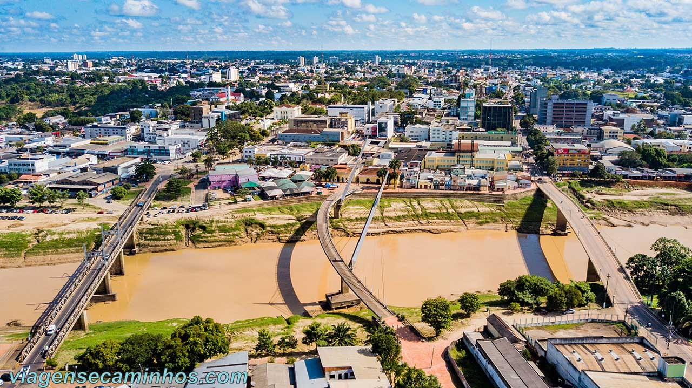

O estado do Acre está localizado na região Norte do Brasil e faz fronteira com o Peru e a Bolívia, além de outros estados brasileiros. É conhecido por sua rica biodiversidade, com florestas tropicais, rios e uma grande variedade de espécies de plantas e animais. A economia do Acre é baseada principalmente na agropecuária, na exploração de recursos naturais e no extrativismo, especialmente da borracha e da castanha-do-pará. A cultura local é influenciada pelas tradições indígenas e pelos povos ribeirinhos, refletida em festas, culinária e manifestações culturais. O clima do Acre é tropical, com temperaturas elevadas e alta umidade ao longo do ano. Em resumo, o Acre é um estado de grande importância ecológica, com uma cultura diversificada e uma economia que valoriza seus recursos naturais.
 Voltar